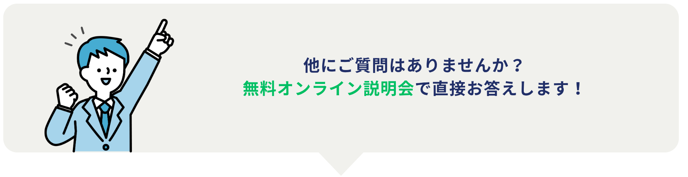

よくあるご質問
どうして完全無料なのですか？
当スクールは、提携する企業様からいただく協賛金や採用手数料によって運営が成り立っています。「専門技術を身につけたいけれど、高額な受講料が払えない」という方でも、無料で受講し、未経験から就職できる仕組みを作りました。
なぜ未経験からでも就職できるのですか？
業界事情に精通した専任のキャリアアドバイザーが在籍しているからです。企業が求める人物像を把握しており、履歴書・職務経歴書の添削から面接対策まで、あなたに合わせた個別の就職支援を徹底して行うため、高い内定獲得力を持っております。
やむを得ず途中で辞めてしまった場合、違約金などはかかりますか？
いいえ、かかりません。やむを得ず途中で辞めてしまった場合や、万が一就職に至らなかった場合でも、違約金やその他の費用をご請求することは一切ございませんのでご安心ください。
学歴や職歴に自信がないのですが大丈夫でしょうか？
学歴や職歴に自信がなくても受講可能です。実際に高卒や大学中退、ニート、フリーター、他業界の方が未経験から学習し、就職を目指している方がいらっしゃいます。
オンラインだと学習のモチベーションが続くか心配です。
当スクールでは、平日10時～22時の間、予約不要で、いつでも講師とオンラインで繋がり、マンツーマン指導が受けられます。「わからない所で立ち止まる」ことがないため、自己学習にありがちなモチベーションの低下を防ぎ、スムーズに学習を進められます。
紹介される企業がブラック企業でないか不安です。
ご安心ください。未経験からでも安心してキャリアを築ける優良企業を厳選してご紹介しています。ただし、人気企業は採用ハードルが高くなる傾向があるため、皆様のご経歴やご希望を丁寧にヒアリングした上で、最適な企業をご提案いたします。
パソコンを持っていないのですが受講可能でしょうか？
可能です。パソコンの貸し出し相談もできます。
地方に住んでいても入校することはできますか？
オンラインで完結するので可能です。しかし、未経験から採用する企業のほとんどは、都心（東京／愛知／大阪）で採用しているケースが多いので、お住まいによって就職時に転居していただく可能性があります。
研修中のCADソフトは何を使いますか？
AutoCADです。業界を問わず就職に有利と言われており、圧倒的な汎用性と、あらゆる設計業務の基礎となるソフトなので、AutoCADを使用しています。AutoCADで基礎を学べば、他のCADソフトにもスムーズに対応できる土台が身に付きます。
AutoCADの利用料金はかかりますか？
かかりません。受講生からは一切お金をいただきません。
研修はいつから開始できますか？
月に2回入校日を設けております。毎月1日、15日から参加可能です。
就職はせず、CADの学習だけを目的で、受講することはできますか？
申し訳ございませんが、当スクールは就職を目的としておりますので、学習だけしたい方は入校をお断わりしております。
正社員の経験がないのですが、受講できますか？
はい、正社員経験がなくても、就職の意欲があれば受講することができます。
在学中の学生でも受講することはできますか？
受講可能です。しかし最終学年の方しか受けて付けておりません。
※中退を検討されている方や通信制に通われている方は、受講案内が可能ですのでご相談ください。
働きながら受講できますか？
はい、できます。平日10時～22時の間、予約不要で、いつでも講師とオンラインで繋がり、マンツーマン指導が受けられます。なので仕事おわりや、休憩中のスキマ時間などを使い、学習をしている方がほとんどです。

＼ 簡単30秒‼ ／ 無料オンライン説明会に予約する